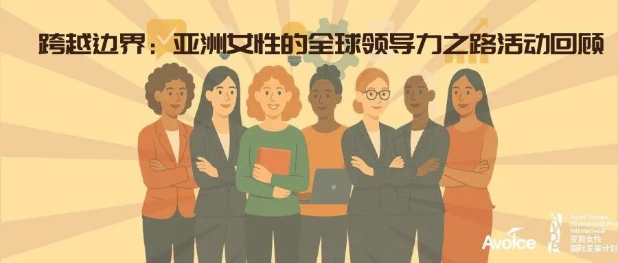

摘要
2025年8月3日，AWDPI亚洲女性的全球领导力之路活动回顾于线上成功举办。本次活动继续秉承 AWDPI 消除对亚裔女性的歧视与性别暴力、推动其赋能与发展的宗旨，聚焦女性在职业发展和创业初期的核心挑战与应对策略。本次讲座特邀拥有丰富咨询行业经验的创业者李小科（Isabel Li）女士担任分享嘉宾，深入探讨了毕业生入行咨询的路径选择、个人品牌价值的精准定位以及脱离平台依赖的创业实战经验。
分享嘉宾：李小科（Isabel Li）
讲座主题： 亚洲女性的全球领导力之路
金句分享
“长期意识是你在做的时候你要知道，你是一个新人，你想打造一个人设，你要知道这个人设是什么，这个人设越清晰越好... 你要去寻宝，那你至少知道你要找的是什么宝。 ”
“创业是从 ‘我是谁 ’ 的追问开始的——当你不再是某个头衔的持有者，还能用什么照亮他人？”
李小科女士对于面对职业转型的普遍焦虑，她以"过来人"身份提出温暖洞见。
★核心观点 ★
毕业生入行咨询的 “黄金通道 ”
李小科女士提到，对于应届毕业生或处于职业起步阶段的年轻人，进入顶尖咨询公司并非遥不可及。她强烈推荐关注英国乃至全球各大咨询公司的“Graduate Program”（毕业生计划）。这类项目专为培养新人设计，提供系统 培训，是入行的绝佳途径。她认为咨询行业是欢迎大学毕业生去申请加入的，竞争虽然激烈，但很多华人毕业生通过 Graduate scheme 进入了知名企业，并通过努力，逐渐打造出自己的一片天地。
以终为始
打造清晰 “个人人设 ”：成功的职业规划始于清晰的自我定位 —— “你想成为谁？ ”李小科女士将这种定位称为 “个人人设 ” 。她以自己在异国他乡的初感不适到勇敢迈出第一步为例子，努力强调自身的人设越清晰，目标就越明确。
新人需要思考：我理想的状态是什么？当前状态与之差距何在？需要考取哪些证书？积累何种经验？她建议新人主动寻求社群中有经验前辈的真诚指导。她还强调：“你的方向越细化，越有可能实现。”
突破平台依赖
创业从零开始的品牌价值塑造： 分享自身从零开始创立咨询公司的经历时，李小科坦诚地指出 “离开平台，你就是从零开始 ” 的挑战。关键在于能够精准梳理并营销自身品牌的核心价值。
“当介绍自己只是‘李小科，这家小公司创始人 ’ 时,我见过太多疑惑的眼神。但正是这种 ‘归零 ’，逼我梳理出最本质的价值：因地制宜地，帮中国企 业理解英国制度、文化、人才、合规、合作的路径，打造真正 ‘接地气 ’ 的国际化战略。”
拥抱不确定性的力量：社群与 AI 的双向治愈
“迷茫时，我总被善意托住。”李小科女士坦言，职业转型期的最大助力来自两类陪伴，分别是前辈社群的真诚指引和 AI 工具的深度对话 。行业前辈们无偿分享经验，将抽象的不确定性拆解为可落地的路径。此外，她与 GPT 建立独特信任关系：“我会像对朋友那样倾诉困境，请它从专家视角帮我分析咨询行业可能性——它成了我的 ‘云上导师 ’。”
★总结与展望★
李小科女士真诚地分享了从平台依赖到独立创业的核心心法与实战经验，强调了明确目标、精准定位核心价值、善用资源（社群、前辈） 的重要性。她的分享为处于职业选择路口的新人以及渴望突破平台限制、实现个人价值的女性提供了极具启发性的行动指南。
把握入口：善用 Graduate Program 实现行业切入
向内探索：从过往经历提炼可迁移能力（如 “减少沟通成本 ” 的核心价值）
直面从零开始：脱离平台后，以解决实际问题的能力重构品牌
“你要知道：我是谁？我能解决什么问题？ ”—— 这是女性突破职业依赖、实现自我赋权的根基 。真正的赋能，是教会我们在风暴中辨认自己的灯塔。那些梳理自我价值的深夜，那些前辈伸出的手，那些帮客户节省的每一分钟， 最终织成一张温柔而坚韧的安全网，托住每个在转型中下坠的灵魂。赋能之路，始于每一刻的自我定义。
欢迎扫码关注 AWDPI，持续获取女性成长资源！
扫码加入倡导与影响力部活动总群
若二维码过期可在公众号后台留言或添加小助手: Avoice-WomenAid加入群聊
撰稿｜李予衎
排版&封面｜吴雨桐
图片｜Storyset